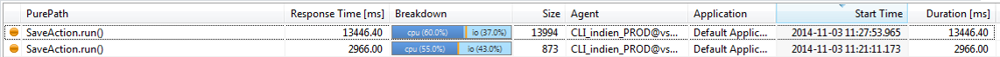
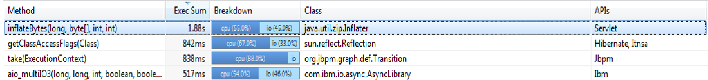
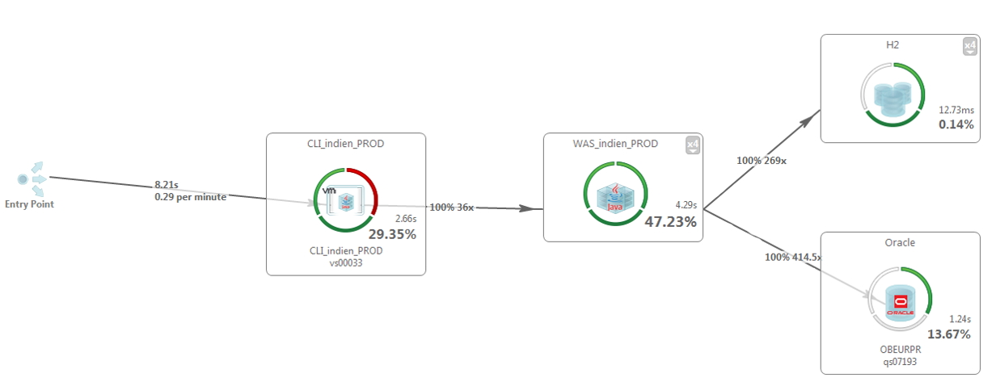
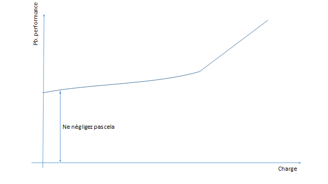
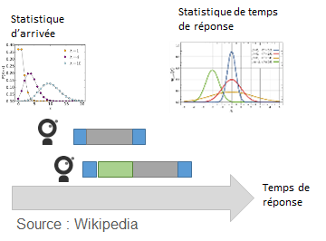
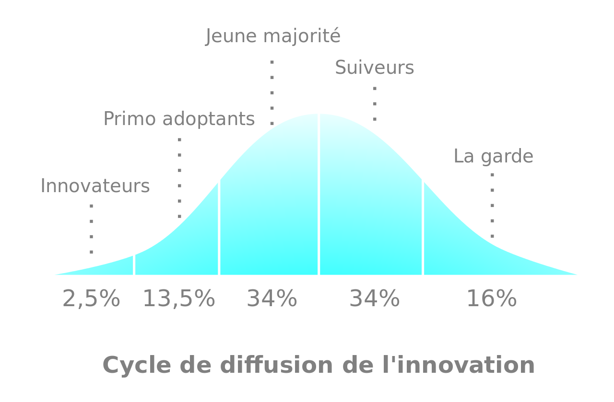
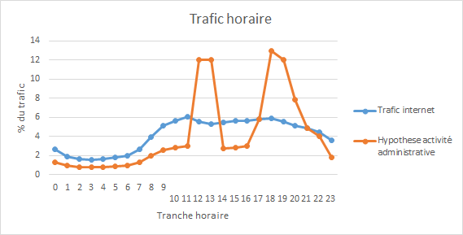
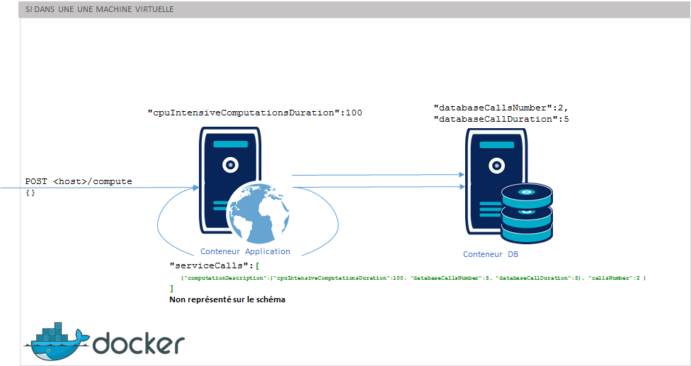

Performance du SI
Marc BOJOLY
OCTO Technology Paris, Manager et consultant Co-fondateur du Performance User Group Paris
Cyril PICAT
OCTO Technology Lausanne, consultantUn retour d'expérience
La consolidation d'un SI de titrisation bancaire du Luxembourg vers la SuisseIdées reçues
Ca va passer, on a bien travailler, cela va passer = nier l'exitence du problème
C'est impossible à tester sauf en prod = nier l'exstence de solutions
La charge ne sera pas représentative = nier la fiabilité de ces solutions
On n'y arrivera jamais = mettre en doute la capacité à y arriver
Ma promesse à la fin de ces quelques slides
Vous convaincre qu'une approche est possible
Et vous aider à combattre les idées reçues !
Idée reçue#1 : Le dimensionnement
Idées reçues :La préproduction n'est pas représentative
Il faudrait simuler l'ensemble des actvités de la banque
Notre constat
La pluspart des problèmes sont des problèmes de conception80% des problèmes peuvent déjà être identifiés sans dimensionnement correct
100% des problèmes avec une petite machine seront présents sur une machine plus grosse
Idée reçue#2 : L'automatisation
Vous ne pourrez pas l'automatiser on l'a essayé avec QTP et personne n'y est arrivéNotre constat
Certains clients lourds sont très difficiles à tester
Mais il existe des alternatives (e.g. Sikuli)
Adapter vos tests de performance en fonction des enjeux et de la complexité
Idée reçue#3 : Les problèmes sont sur le mainframe
Ayez systématiquemnent l'obsession de la mesure
Il y a le monde idéal et le monde réel
“Fais de ta vie un rêve, et d'un rêve une réalité.” Antoine de Saint-Exupéry - Cahiers de Saint-Exupéry (1900-1944)
Rêve 1 : Avoir une parfaite connaissance de la performance
  APM : les limites
Les middleware un peu anciens ou avec trop de spécificités
Les applications natives (si vous n'avez pas les sources)
Rêve 2 : Faire des tests de charge à pleine volumétrie
La performance est par nature non linéaire
Sans mesure tout n'est que conjecture
Oui mais en pratique...
Résolvez le problèmes progressivement
Rêve 3 : On a ce qu'il faut pour faire les tests
Des données migrées
Des personnes disponibles
Et colocalisées...
Les intangibles
Un environnement opérationnel sur un jeu de données minimal
Isoler la zone de mesure
Pour le reste...
Ne pas oublier les basics
Les tests de charges application par application restent utiles
Les bonnes pratiques qui leur sont associées également
Délimiter le périmètre testé
Car un test de charge reste un test automatisé
Car un test en erreur c'est un test qui ne sert à rien
Comment le délimiter ?
Choisissez soigneusement votre jeux de données
Ou développez des bouchons
Mettre un exemple concret ?
Modélisation de la charge
Comment modéliser le comportement de mes utilisateurs ?
Combien d'utilisateurs simultanés ?
Qu'est-ce qu'un utilisateur simultané ?
La véritée est en production
Construisez un modèle à partir de vos statistiques de production
Modélisation de la charge : Soyez prédictif
Si vous n'avez pas de production, proposez un modèle en fonction des informations que vous avez.
Modélisation de la charge : Soyez prédictif
Si vous n'avez pas de production, proposez un modèle en fonction des informations que vous avez.
Modélisation de la charge : comment l'utiliser ?
Définissez dans vos tests d'injection locaux le nombre d'utilisateurs "simultanés" et le temps de réflexion
val clientSearchChain = group("client_search_page") {
exec(http("client_search_html")
.get("""/ebankingAdmin/acibf/root/contract/contractlist/""")
}
).pause(7,8) //Pause between 7 and 8 seconds
val scn = scenario("AdminSimulation")
.repeat(1) { //Beware of the coordinated omission
exitBlockOnFail {
exec(loginChain)
.exec(clientSearchChain)
}
}
setUp(scn.inject(
rampUsers(120).over(60), //Needs to be adapted to your scenario
).protocols(httpProtocol)
Ne négligez pas les tests de charge unitaire
La vérité est toujours dans la mesure
Comment avaler un éléphant ? Bouchée par bouchée
Fact #4
Probablement commencer par l'exemple de la latence avec MQSeriesLes problèmes faibles prennent de l'ampleur au niveau d'un SI
POC
DEMO : tout fontionne
Les problèmes faibles prennent de la lenteur au niveau d'un SI
- Latence
- N1 requêtes
- N+1 requêtes imbriquées
Annexes mise en page
Reveal.js
The HTML Presentation Framework
Created by Hakim El Hattab / @hakimel
Hello There
reveal.js enables you to create beautiful interactive slide decks using HTML. This presentation will show you examples of what it can do.
Vertical Slides
Slides can be nested inside of each other.
Use the Space key to navigate through all slides.
Basement Level 1
Nested slides are useful for adding additional detail underneath a high level horizontal slide.
Basement Level 2
That's it, time to go back up.
Slides
Not a coder? Not a problem. There's a fully-featured visual editor for authoring these, try it out at http://slides.com.
Point of View
Press ESC to enter the slide overview.
Hold down alt and click on any element to zoom in on it using zoom.js. Alt + click anywhere to zoom back out.
Touch Optimized
Presentations look great on touch devices, like mobile phones and tablets. Simply swipe through your slides.
Fragments
Hit the next arrow...
... to step through ...
... a fragmented slide.
Fragment Styles
There's different types of fragments, like:
grow
shrink
fade-out
current-visible
highlight-red
highlight-blue
Transition Styles
You can select from different transitions, like:
None -
Fade -
Slide -
Convex -
Concave -
Zoom
Themes
reveal.js comes with a few themes built in:
Black (default) -
White -
League -
Sky -
Beige -
Simple
Serif -
Blood -
Night -
Moon -
Solarized
Slide Backgrounds
Set data-background="#dddddd" on a slide to change the background color. All CSS color formats are supported.
Image Backgrounds
<section data-background="image.png">Tiled Backgrounds
<section data-background="image.png" data-background-repeat="repeat" data-background-size="100px">Video Backgrounds
<section data-background-video="video.mp4,video.webm">... and GIFs!
Background Transitions
Different background transitions are available via the backgroundTransition option. This one's called "zoom".
Reveal.configure({ backgroundTransition: 'zoom' })Background Transitions
You can override background transitions per-slide.
<section data-background-transition="zoom">Pretty Code
function linkify( selector ) {
if( supports3DTransforms ) {
var nodes = document.querySelectorAll( selector );
for( var i = 0, len = nodes.length; i < len; i++ ) {
var node = nodes[i];
if( !node.className ) {
node.className += ' roll';
}
}
}
}
Code syntax highlighting courtesy of highlight.js.
Marvelous List
- No order here
- Or here
- Or here
- Or here
Fantastic Ordered List
- One is smaller than...
- Two is smaller than...
- Three!
Tabular Tables
| Item | Value | Quantity |
|---|---|---|
| Apples | $1 | 7 |
| Lemonade | $2 | 18 |
| Bread | $3 | 2 |
Clever Quotes
These guys come in two forms, inline:
“The nice thing about standards is that there are so many to choose from”
and block:
“For years there has been a theory that millions of monkeys typing at random on millions of typewriters would reproduce the entire works of Shakespeare. The Internet has proven this theory to be untrue.”
Intergalactic Interconnections
You can link between slides internally, like this.
Speaker View
There's a speaker view. It includes a timer, preview of the upcoming slide as well as your speaker notes.
Press the S key to try it out.
Export to PDF
Presentations can be exported to PDF, here's an example:
Global State
Set data-state="something" on a slide and "something"
will be added as a class to the document element when the slide is open. This lets you
apply broader style changes, like switching the page background.
State Events
Additionally custom events can be triggered on a per slide basis by binding to the data-state name.
Reveal.addEventListener( 'customevent', function() {
console.log( '"customevent" has fired' );
} );
Take a Moment
Press B or . on your keyboard to pause the presentation. This is helpful when you're on stage and want to take distracting slides off the screen.
Much more
- Right-to-left support
- Extensive JavaScript API
- Auto-progression
- Parallax backgrounds
- Custom keyboard bindings